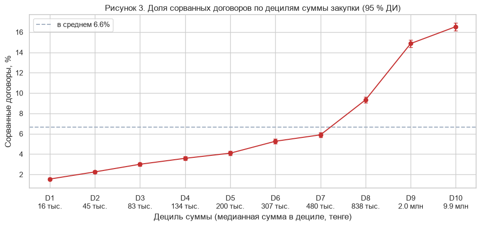
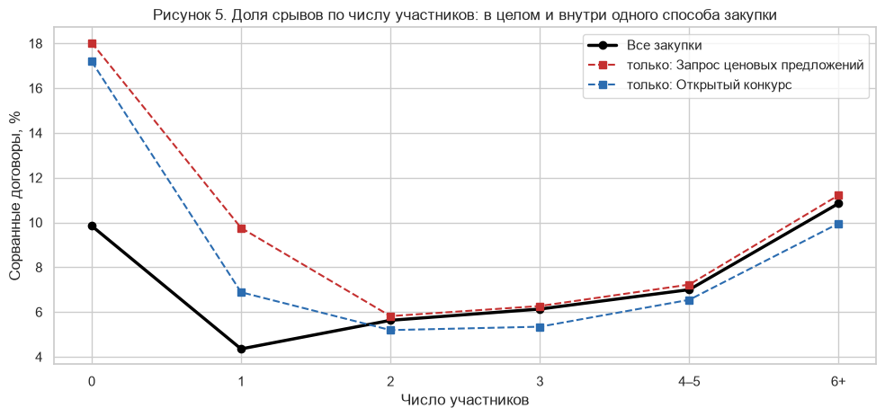

Через портал электронных закупок Казахстана проходит около 1,8 млн закупок в год. Часть договоров по ним расторгается или так и не подписывается, из-за чего приходится повторять процедуры, поставки задерживаются, а бюджетные средства теряются. Надзорные органы могут проверить лишь малую долю закупок, поэтому им нужно заранее знать, где срывы вероятны. Существующие подходы к оценке риска опираются в основном на экспертные «красные флаги», например на единственного участника (Fazekas et al., 2016; Fazekas & Kocsis, 2020). В этой работе изучается, какие характеристики, известные в момент выбора победителя, связаны со срывом договора (RQ1: способ закупки и конкуренция; RQ2: сумма, предмет, регион) и позволяют ли они предсказывать срыв на более позднем периоде (RQ3).
Данные получены из официального API открытых данных портала (OWS v3, Министерство финансов Республики Казахстан). Собраны все 630 762 закупки, опубликованные с 1 января по 31 марта 2024 года, вместе с 1,29 млн лотов, 1,07 млн заявок поставщиков, 556 тыс. записей договоров и реестром недобросовестных участников (РНУ). I квартал 2024 года выбран для того, чтобы у каждого договора было больше двух лет на достижение финального статуса. Сырой срез опубликован как релиз на GitHub, поэтому ноутбук полностью воспроизводится без токена API.
Качество данных оценивалось по каждой таблице (пропуски, дубликаты, неверные типы, некорректные значения, выбросы, несогласованные категории, целостность связей). Ключевым шагом очистки стало сворачивание допсоглашений: 13,6 % строк договоров являются более поздними версиями того же договора, и только последняя версия содержит финальный статус. Единица анализа — закупка, по которой есть хотя бы один договор (n = 358 789). Целевая переменная contract_failed равна 1, если любой из её договоров закончился расторжением (в одностороннем порядке или по соглашению сторон) либо не был заключён. Двадцать признаков, описывающих процедуру, её сумму, лоты, конкуренцию и организатора, построены только на информации, доступной в момент выбора победителя. Проверка на утечку данных исключила поля исполнения, системные метки времени, финальный статус закупки и реестр РНУ, записи которого являются следствием расторжения (Kaufman et al., 2012). Данные разбиты по времени (train: январь–февраль, validation: 1–15 марта, test: 16–31 марта; 74/15/11 %). Базовой моделью служила логистическая регрессия с весами классов; из-за дисбаланса классов она оценивалась по ROC-AUC, PR-AUC и F1 (Saito & Rehmsmeier, 2015).


| Модель (тестовый период, 16–31 марта 2024) | ROC-AUC | PR-AUC | F1 | Точность в топ-1 % |
|---|---|---|---|---|
| Без модели (prior) | 0,500 | 0,066 | — | 0,057 |
| Логистическая регрессия (веса классов, порог подобран на validation) | 0,792 | 0,262 | 0,324 | 0,504 |
Выборка охватывает один квартал, поэтому сезонные эффекты не представлены. Метка объединяет срывы по вине поставщиков с решениями заказчиков (расторжение по соглашению сторон); строгий вариант сохранён для анализа чувствительности. Историю поставщиков и организаторов нельзя использовать без утечки, потому что даты расторжения более ранних договоров не наблюдаются. Примерно у 16 % закупок нет предложений с ценой, а в части предложений единицы измерения несогласованы. Результаты показывают связи, а не причины.
Срыв договоров в госзакупках Казахстана не редок и не случаен: он сосредоточен в крупных закупках товаров, в процедурах с выбором по наименьшей цене и в крупнейших городах, а от конкуренции зависит U-образно. Популярный «красный флаг» — единственный участник — имеет смысл только с учётом способа закупки. Информация, доступная в момент выбора победителя, уже ранжирует рискованные закупки намного лучше случайного отбора. Это обосновывает следующий этап проекта: модели на деревьях, способные уловить найденные здесь взаимодействия, и текстовые признаки из описаний лотов.
Fazekas, M., & Kocsis, G. (2020). Uncovering high-level corruption: Cross-national objective corruption risk indicators using public procurement data. British Journal of Political Science, 50(1), 155–164.
Fazekas, M., Tóth, I. J., & King, L. P. (2016). An objective corruption risk index using public procurement data. European Journal on Criminal Policy and Research, 22(3), 369–397.
Kaufman, S., Rosset, S., Perlich, C., & Stitelman, O. (2012). Leakage in data mining: Formulation, detection, and avoidance. ACM Transactions on Knowledge Discovery from Data, 6(4), 1–21.
Министерство финансов Республики Казахстан. (2026). Портал государственных закупок: API открытых данных (OWS v3). https://ows.goszakup.gov.kz (дата обращения: 6 октября 2026).
Saito, T., & Rehmsmeier, M. (2015). The precision-recall plot is more informative than the ROC plot when evaluating binary classifiers on imbalanced datasets. PLoS ONE, 10(3), e0118432.
Thaler, R. H. (1988). Anomalies: The winner's curse. Journal of Economic Perspectives, 2(1), 191–202.